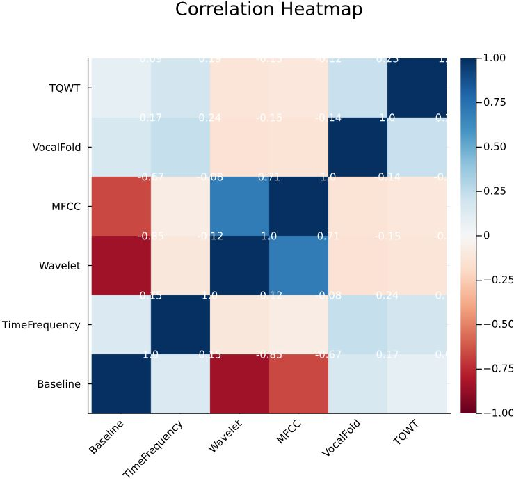
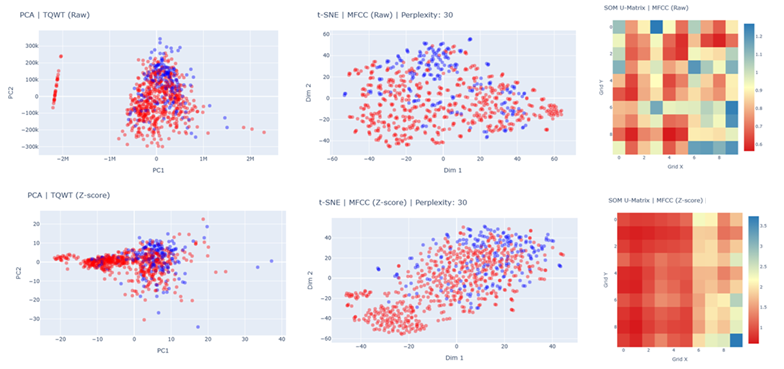
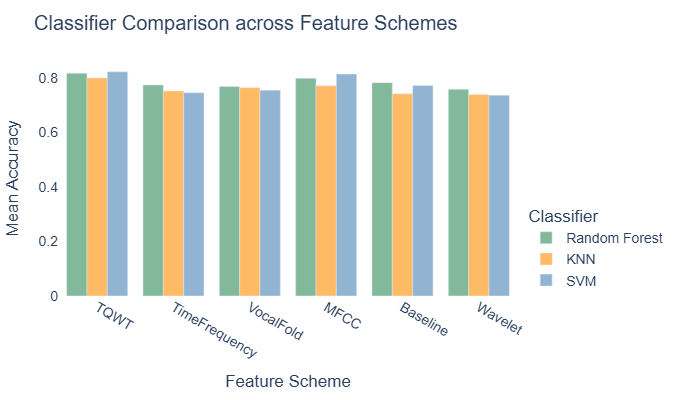
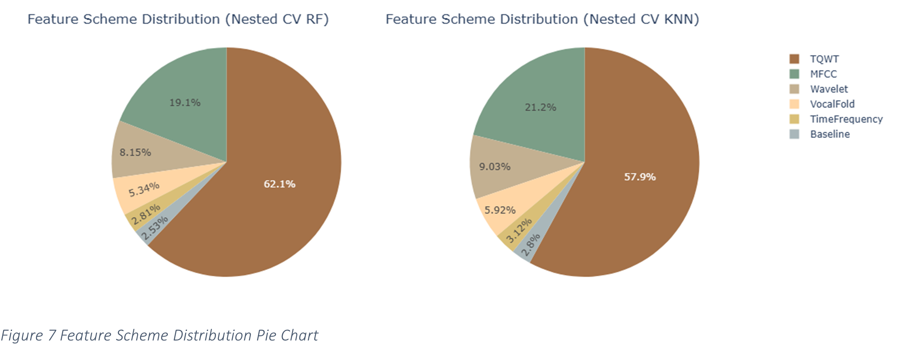

Machine Learning · Group Project · University of Otago
Parkinson's Diagnosis
Using Voice Signal Analysis
A machine learning investigation exploring whether voice signal features can
support Parkinson's disease diagnosis — comparing classifiers across six feature
schemes, with dimensionality reduction, feature selection, and nested
cross-validation. Built in Julia.
754
Acoustic features per entry
252
Participants (PD + HC)
6
Feature schemes compared
3
Classifiers evaluated
This group project was completed as a school assignment at the University of Otago. Working in a team of three, we investigated
whether voice signal features — extracted from sustained phonation recordings —
could reliably support early Parkinson's disease diagnosis.
My contributions: EDA & discussion, PCA visualisation,
Random Forest classification, feature selection analysis, nested cross-validation
framework, gender-stratified exploration, and report writing.
The dataset (Sakar et al., 2018) contains acoustic voice features from 188
Parkinson's patients and 64 healthy controls, with each subject providing three
recordings. Before any modelling, four key challenges shaped our approach:
-
High dimensionality — 754 attributes per entry poses a serious
risk of overfitting with standard classifiers.
-
Class imbalance — roughly 3:1 PD-to-HC ratio means naive
accuracy metrics are misleading.
-
Repeated measures — three recordings per subject introduce
correlated samples that standard cross-validation does not handle correctly.
-
Feature redundancy — strong inter-scheme correlations
(e.g. Wavelet–MFCC at r ≈ 0.7, Baseline–Wavelet at r ≈ −0.85) confirm
many features carry overlapping information.

Correlation heatmap across the six feature schemes — strong inter-scheme correlations confirm significant feature redundancy.
-
EDA & data cleaning
Identify dimensionality, imbalance, and repeated-measure issues. Apply Z-score standardisation to normalise feature ranges across schemes.
-
Separability visualisation
Apply PCA, t-SNE, and SOM to explore class structure across all six feature schemes before classification.
-
Classifier comparison
Compare SVM, Random Forest, and KNN across all six schemes using subject-grouped 5-fold cross-validation to prevent data leakage from repeated measures.
-
Feature selection
Apply RF feature importance and Pearson correlation filtering to reduce 754 features to ~330, removing redundancy while preserving predictive power.
-
Nested cross-validation
Introduce a 5×5 nested CV framework with stratified class balancing — inner loop for hyperparameter tuning, outer loop for unbiased performance estimation.
-
Gender-stratified analysis
Train separate RF models for male and female subsets to explore whether diagnostic patterns differ by gender.
Julia
Random Forest
SVM
KNN
PCA
t-SNE
SOM
Nested CV
MFCC
TQWT
DecisionTree.jl
MultivariateStats.jl
PCA showed limited separation across most schemes after standardisation, though
MFCC and TQWT displayed slightly clearer boundaries. t-SNE revealed non-linear
local clusters, and SOM visualisations showed that MFCC produced the smoothest
topology. Overall, MFCC and TQWT exhibited the best PD–HC separability, while
TimeFrequency and VocalFold remained highly overlapped.

PCA, t-SNE, and SOM visualisations across all six feature schemes — TQWT and MFCC showed the clearest group structure.
Subject-grouped cross-validation ensured that all three recordings from the same
person stayed in the same fold, preventing leakage between training and evaluation
sets. Random Forest consistently outperformed KNN and SVM, with narrower
fold-to-fold variation. MFCC and TQWT schemes ranked highest across all classifiers.

Accuracy distributions across classifiers and feature schemes — Random Forest showed the most stable and accurate results on TQWT and MFCC.
The initial feature selection had been performed on the full dataset, which risked
data leakage. A 5×5 nested CV framework was introduced to address this: the inner
loop handled hyperparameter tuning while the outer loop provided unbiased
performance estimates. Stratified class balancing was applied to handle the
imbalanced PD-to-HC ratio.

Feature scheme selection patterns across nested folds — TQWT and MFCC consistently dominated both RF and KNN models.
-
MFCC and TQWT features consistently showed the best
separability and classification performance across all methods — confirming
that frequency-domain and time–frequency features capture Parkinson's-related
voice patterns most effectively.
-
Random Forest was the strongest classifier overall, delivering
the most stable results across feature schemes and cross-validation folds.
-
Feature reduction from 754 to ~330 (via RF importance and
Pearson correlation filtering at threshold 0.85) maintained model performance
while significantly reducing dimensionality.
-
Subject-grouped cross-validation produced notably more
conservative estimates than standard k-fold — confirming that ignoring repeated
measures inflates reported accuracy.
-
Class imbalance remains the main limiting factor, particularly
for female subsets where the PD-to-HC ratio was approximately 5:1.
Under the full nested cross-validation framework, Random Forest achieved strong
and stable discrimination between Parkinson's patients and healthy controls.
KNN performed consistently but lower across all metrics.
The project demonstrated that careful handling of repeated measures, class
imbalance, and data leakage is essential for producing reliable and reproducible
results in medical machine learning tasks.